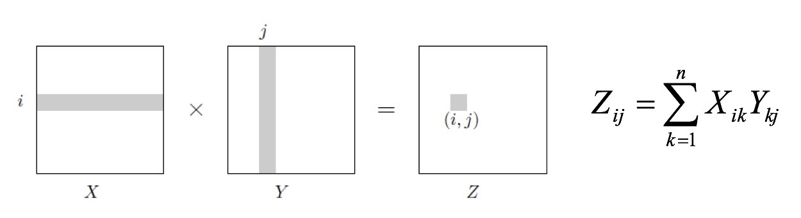
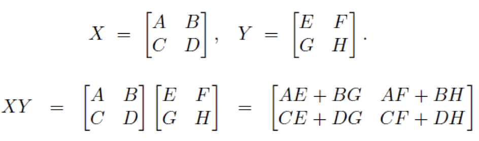

class: center, middle <center><img src="images/ub.png" width="150"></center> # **ALGORÍSMICA** ## Strassen Jordi Vitrià, Mireia Ribera .blue[jordi.vitria@ub.edu] | .blue[ribera@ub.edu] --- ## Algorismes de dividir-i-vèncer: multiplicació de matrius <center></center> Suposant que els nombres de la matriu són "petits" (es poden escriure amb menys de 64 bits) i són matrius quadrades de `n` files i `n` columnes, la implementació directa de la multiplicació de matrius és \\( O(n^3) \\) perquè s’han de calcular \\( n^2 \\) elements, i cada càlcul és \\( O(n) \\). Fins a 1969 es pensava que no es podia fer d’una altra manera! --- ## Algorismes de dividir-i-vèncer: multiplicació de matrius Però el 1969, el Dr. Volker Strassen va trobar una manera més òptima: Es va basar en que el producte de dues matrius `(n x n)` es pot calcular a partir de la seva descomposició en blocs `(n/2 x n/2)`. Suposem que volem multiplicar \\( X \\) per \\( Y \\), ambdues de `(n x n)` elements. Llavors tenim aquestes igualtats si descomposem les matrius en 4 parts de la mateixa mida: <center></center> --- ## Algorismes de dividir-i-vèncer: multiplicació de matrius Aquesta descomposició es pot expressar recursivament. La recurrència consisteix en passar d’una matriu `(n x n)` a 8 matrius `(n/2 x n/2)`. La funció de recurrència d'aquest algorisme és \\(T(n) = 8 T(n/2) + O(n^2)\\) , atès que: + Hi ha 8 crides recursives; \\( (a = 8) \\). + El nombre de files/columnes és `(n/2)`; \\( (b = 2) \\). + La reconstrucció de la solució són \\( n^2 \\) sumes, amb \\(O(n^2)\\); \\( (d = 2) \\) Que resulta en una complexitat, aplicant el teorema Master, de \\(O(n^3)\\), la mateixa que la multiplicació convencional de matrius. --- ## Algorismes de dividir-i-vèncer: multiplicació de matrius Però Strassen es va adonar que aquestes operacions, fent la mateixa descomposició que abans, es podien agrupar així: <center><img src="images/matmul3.png" width="550"></center> Cada una de les \\( P_i \\) representa una crida recursiva per les multiplicacions i la reconstrucció torna a ser de l'ordre de \\( n^2 \\) sumes. --- ## Algorismes de dividir-i-vèncer: multiplicació de matrius La complexitat ara és: \\[ T(n) = 7 T(n/2) + O(n^2) \\] i aplicant el cas 3 del teorema Master (\\( 7 > 2^2 \\)) resulta en una complexitat de \\( O(n^{\log_2 7}) \\), que és aproximadament \\( O(n^{2.81}) \\). ```python 1000000**3 >>> 1000000000000000000 1000000**2.81 >>> 72443596007499056 ``` Funciona 100 vegades més ràpid!